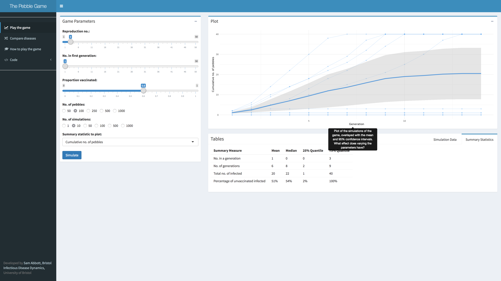
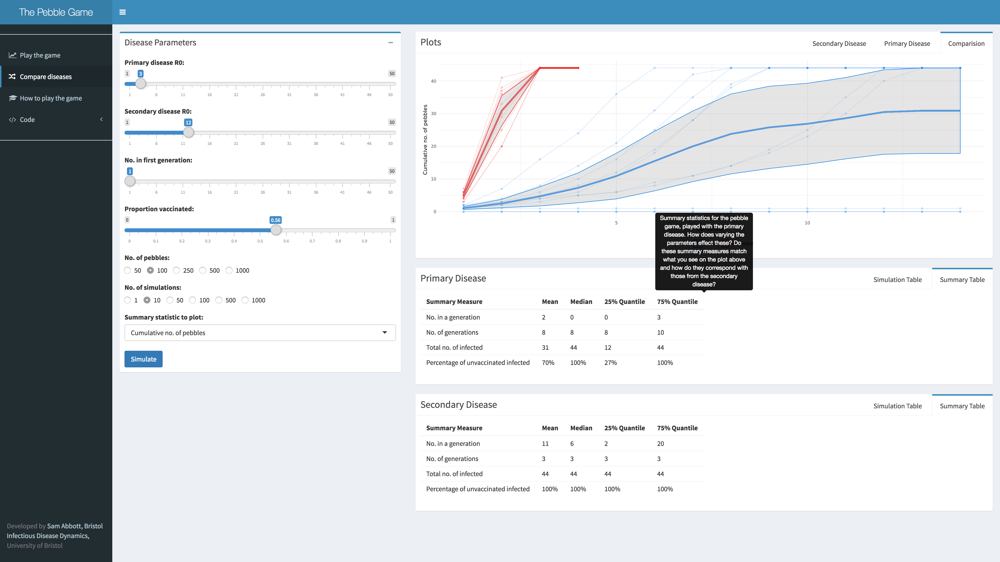

The Pebble Game is a shiny application that simulates a simple game which has been designed to reflect real world epidemics and the vaccination programmes used to control them. It involves repeatedly drawing pebbles from a bag, which contains two distinct pebble types (to represent vaccinated and unvaccinated individuals). The number of pebbles that are drawn each round is dependent on the number of infect-able (i.e unvaccinated) cases drawn in the previous round, and the infectiousness of the simulated disease. Each game can then be thought of as a single stochastic (with a random element) epidemic, by combining multiple simulations of the game, the dynamics of the system can be understood. Hopefully by playing the game and exploring the app you will gain an insight into how a single vaccination can contribute to protecting the rest of society.
Playing a single game
The first step is to understand what is being simulated, hopefully if you have just played the game with me in person you should have a good idea of this! If you haven’t played the game with me, and the simple explanation above wasn’t enough then see the instructions for playing the game physcially (click on the how to play the game tab)- it might even be worth giving it a go at home.
The next step is to open the app. Your screen should then look like this,

You should now be looking at 10 simulations of the pebble game, each with 100 pebbles, 60% of pebbles being vaccinated, and a reproduction number of 3 (don’t know what this is - try hovering over it in the app). These parameters can all be varied (hit the plus in the game parameters box), although if you add more stones or more simulations it may take awhile!
The graph on the right summarises each simulation, recording the number of pebbles in each generation. You should notice that some paths are darker blue than others, this indicates that multiple simulations traced the same pathway. From this you should see that there are two distinct solutions, a rapid die out of the disease or an epidemic that infects everyone (try varying the parameters to see what effects they have on these steady states). To get a clearer picture of this try setting the summary statistic to plot to the number of pebbles, this will show how the disease spreads with each generation (known as the epidemic curve).
The dark blue line, and shaded ribbon, summarise all your simulations (using the mean and 95% confidence intervals), whilst this is helpful it doesn’t always tell the full story! This is because if you have diverging solutions, as in this example, a single summary statistic cannot accurately represent either of them and instead represents an overview of the system. This is a well known problem in statistics so watch out for it cropping up elsewhere.
The table below the graph helps with this problem by providing a variety of summary measures, including the number in each generation, the number of generations, the total number infected, and the percentage of unvaccinated pebbles that are infected. Each one of these is presented with several measures (mean, median, 25%, and 75% quantiles), this allows you to get an understanding of the distribution (which you can’t get from a single point estimate). In this example you should see that mean number of generations is about 7, which parameters effect this measure? Can you vary the parameters so that the mean is still about 7 but the other summary measures change?
Now it is time to investigate an epidemic using the app. A common goal of vaccination programmes is to vaccinate a sufficient proportion of the population that a disease cannot cause an epidemic. The lower bound for this is known as the vaccination thresold, which can often be found mathematically. By varying the parameters of the game you should be able to estimate this threshold! The key question is now what factors influence this vaccination threshold (try varying the game parameters)? Once you’ve investigated all the parameters try looking up some real world diseases (for example measles) and seeing how the vaccination threshold of your disease compares to theirs. Why do you think it is different?
Comparing diseases
To help you further explore the effects of varying parameters on the outcome of the pebble game the Pebble Game app has an additional tab (Compare diseases). This lets you simulate two diseases, each with an individual reproduction number, but otherwise using the same parameters. An example, comparing a disease with a reproduction number of 3 and another disease with a reproduction number of 12 can be seen below,

The output in this tab is very similar to that in the Play the game tab, but there is now a graph of both diseases, as well as for each disease separately. In this example we see that the second disease has a much lower generation time, than the primary disease. However even for this much slower disease in over 25% of simulations all of the unvaccinated pebbles are still infected!
Ideas for further exploration
If you are interested in exploring the pebble game further then here are a few ideas of what to questions to investigate;
- What effect does varying the number of simulations have? Are there parameters for which this has a greater impact? If so what implications does this have for real world diseases?
- Can you identify stages of an epidemic by looking at plots of the number of pebbles in each generation? At which stage is the disease most likely to die out? What does this mean for epidemic control?
- What features of epidemics is the Pebble Game not capturing? How do you think these features might influence the results?
Hopefully this post was a useful introduction to the Pebble Game and to the simple dynamics of infectious disease dynamics and vaccination. If you have any suggests for another blog post, or future developments to the Pebble Game then please comment below or contact me by twitter or email